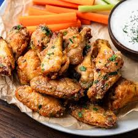

Home
Chicken Wings Recipe

Description
Chicken wings are a popular appetizer or snack, typically deep-fried or baked and coated in a variety of sauces like buffalo, barbecue, or honey mustard. They’re often served with a side of dipping sauce, such as ranch or blue cheese, and are known for their crispy exterior and tender, flavorful meat.
Ingredients:
- 10-12 chicken wings
- 2 tbsp olive oil
- 1/4 cup buffalo sauce (or your favorite sauce)
- 1 tsp garlic powder
- 1 tsp paprika
- Salt and pepper to taste
- Optional: Fresh parsley for garnish
Steps:
- Preheat your oven to 400°F (200°C).
- Pat the chicken wings dry with paper towels.
- In a large bowl, toss the wings with olive oil, garlic powder, paprika, salt, and pepper.
- Place the wings in a single layer on a baking sheet lined with parchment paper or aluminum foil.
- Bake for 25-30 minutes, flipping halfway through, until the wings are crispy and golden brown.
- Remove from the oven and toss the wings in buffalo sauce (or your chosen sauce).
- Serve with dipping sauce and garnish with fresh parsley, if desired. Enjoy!